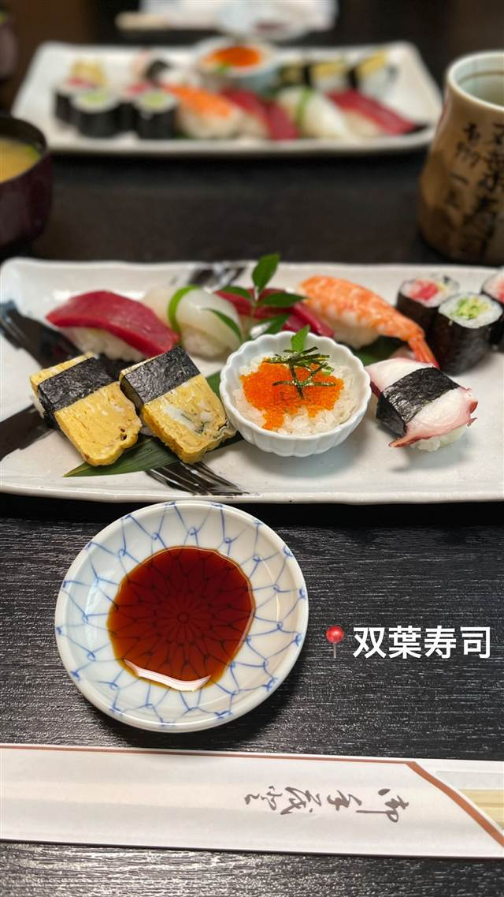

寿司 · 寿司 · 宮前区菅生
双葉寿司
16席の小さな店構えで、火〜日曜だけ営む寿司店
双葉寿司
神奈川県川崎市宮前区菅生にある寿司店。16席の小さな店構えで、火～日曜の昼・夜に営業している（月曜定休）。
REVIEWS
世間の評判
3.01食べログ
大将夫婦の温かい接客と良心的価格
- 大将夫婦の温かく優しい人柄と丁寧な接客を評価する声がいくつかある
- 良心的な価格でマグロやかんぴょうが美味しいと評価する声がある
- 口コミがまだ少なく当たりはずれがあると感じる人も一部にいるようだ
食べログ 口コミ5件
| どこから | 東京から1時間ほど |
|---|---|
| 予算 | 夜 ¥1,000～¥1,999 |
| 場所 | たまプラーザ駅（バス） 神奈川県川崎市宮前区菅生3-1-4 |
| メモ | カウンター中心16席。火～日11:00-14:00、17:00-21:00営業（月曜定休）。夜の予算目安1,000～1,999円。 |
食べたもの：寿司(テキストステッカー)
NEARBY
近い店・同じ系統の店
-
 寿司 銀座
みこ寿司（銀座のみこ寿司）
豊洲の初競りにも参加、名物はウニパラダイス
昼 ¥10,000～¥14,999 夜 ¥10,000～¥14,999
寿司 銀座
みこ寿司（銀座のみこ寿司）
豊洲の初競りにも参加、名物はウニパラダイス
昼 ¥10,000～¥14,999 夜 ¥10,000～¥14,999
-
 寿司 梅ヶ丘
寿司の美登利 総本店（梅ヶ丘）
1963年創業で穴子を一本まるごと握った元祖とされる看板メニューが今も残る
昼 ¥2,000～¥2,999 夜 ¥3,000～¥3,999
寿司 梅ヶ丘
寿司の美登利 総本店（梅ヶ丘）
1963年創業で穴子を一本まるごと握った元祖とされる看板メニューが今も残る
昼 ¥2,000～¥2,999 夜 ¥3,000～¥3,999
-
 寿司 二子玉川駅
Aburi TORA 熟成鮨と炙り鮨 二子玉川ライズ店（旧店名：九州寿司 寿司虎 Aburi Sushi TORA）
冷凍魚を特殊庫で熟成させる氷結熟成鮨は業界初の試みとされる技法
昼 ¥2,000～¥2,999 夜 ¥2,000～¥2,999
寿司 二子玉川駅
Aburi TORA 熟成鮨と炙り鮨 二子玉川ライズ店（旧店名：九州寿司 寿司虎 Aburi Sushi TORA）
冷凍魚を特殊庫で熟成させる氷結熟成鮨は業界初の試みとされる技法
昼 ¥2,000～¥2,999 夜 ¥2,000～¥2,999
-
 寿司 虎ノ門ヒルズ
意気な寿し処阿部 虎ノ門ヒルズ店
シャリは店主の実家、魚沼産コシヒカリを使う江戸前寿司
昼 ¥1,000～¥1,999 夜 ¥6,000～¥7,999
寿司 虎ノ門ヒルズ
意気な寿し処阿部 虎ノ門ヒルズ店
シャリは店主の実家、魚沼産コシヒカリを使う江戸前寿司
昼 ¥1,000～¥1,999 夜 ¥6,000～¥7,999
-
 寿司 三軒茶屋
寿司とワイン サンチャモニカ
握り99円から、ワインと日本酒は499円からの寿司酒場
昼 ¥1,000～¥1,999 夜 ¥5,000～¥5,999
寿司 三軒茶屋
寿司とワイン サンチャモニカ
握り99円から、ワインと日本酒は499円からの寿司酒場
昼 ¥1,000～¥1,999 夜 ¥5,000～¥5,999
-
 寿司 麻布十番
日本橋すし処 二ノ宮 麻布十番店
上野本店は年間5万人、赤酢の江戸前寿司を一貫80円から
昼 ¥4,000～¥4,999 夜 ¥6,000～¥7,999
寿司 麻布十番
日本橋すし処 二ノ宮 麻布十番店
上野本店は年間5万人、赤酢の江戸前寿司を一貫80円から
昼 ¥4,000～¥4,999 夜 ¥6,000～¥7,999